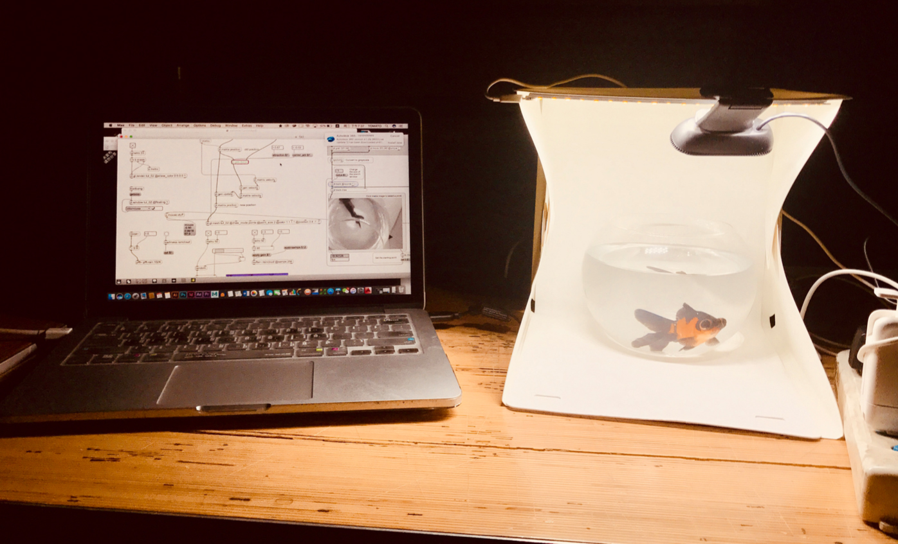
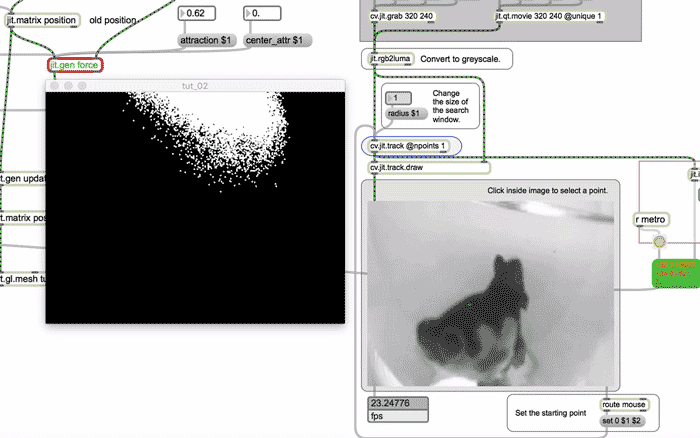
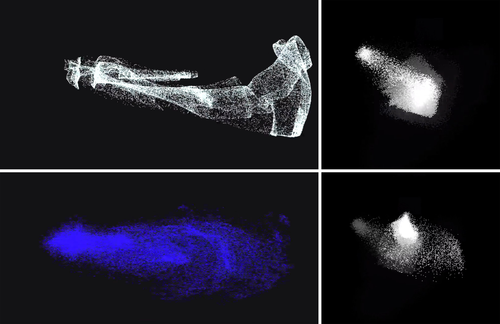
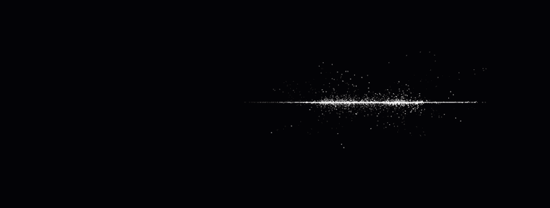

Fishy Performance is an interactive installation work coded with Max7, composed of my MacBook, an external camera, and my friend's pet fish (I borrowed it for this project). The output video and audio are completely driven by the fish itself.

It’s quite relaxing to watch the fish swimming in the water, the way it moves has a unique sense of beauty. Thus I decided to use the fish's swimming trail to create a new work.
Also I hoped to explore a newer form of interaction, the interaction between images and non-human creatures. So my final decision was to visualize how the fish interacted with water by building up a transformative system.

The (x,y) of the fish influences the particle system. As the fish swimming around the fish tank, the particle reshapes simultaneously according to the fish's position data.
Particle system reference: https://www.patreon.com/posts/16717888


This audio is the random sound generated by the fish's position data from the installation.
At present, the image output can only be viewed on the computer, if the image can be output through the projector, it might be a better display effect.